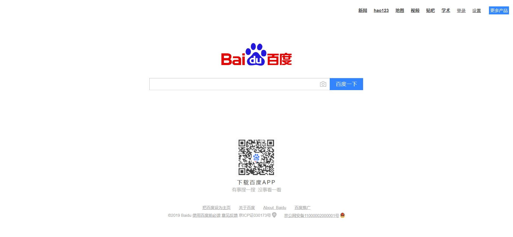
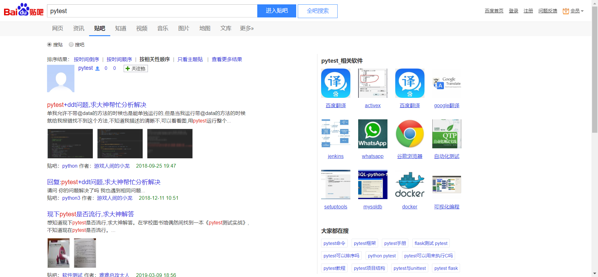

Report generated on 31-Aug-2019 at 12:44:37 by pytest-html v1.20.0
| JAVA_HOME | D:\Jdk |
| Packages | {'pytest': '5.0.1', 'py': '1.8.0', 'pluggy': '0.12.0'} |
| Platform | Windows-10-10.0.17763-SP0 |
| Plugins | {'html': '1.20.0', 'metadata': '1.8.0', 'rerunfailures': '7.0'} |
| Python | 3.7.4 |
7 tests ran in 51.76 seconds.
(Un)check the boxes to filter the results.
6 passed, 0 skipped, 1 failed, 0 errors, 0 expected failures, 0 unexpected passes, 4 rerun| Result | Test | Description | Duration |
|---|---|---|---|
| No results found. Try to check the filters | |||
| Failed | test_dir/test_baidu.py::TestSearchSettings::test_baidu_search_setting |
名称：百度搜索设置 步骤： 1、打开百度浏览器 2、点击设置链接 3、在下拉框中"选择搜索" 4、点击"保存设置" 5、对弹出警告框保存 检查点： * 检查是否弹出提示框
|
2.36 |
|
 self = <test_dir.test_baidu.TestSearchSettings object at 0x045194D0> browser = <selenium.webdriver.chrome.webdriver.WebDriver (session="f3f890d1e9c46b119cd9ec0fdecd02e6")> base_url = 'https://www.baidu.com' def test_baidu_search_setting(self, browser, base_url): """ 名称：百度搜索设置 步骤： 1、打开百度浏览器 2、点击设置链接 3、在下拉框中"选择搜索" 4、点击"保存设置" 5、对弹出警告框保存 检查点： * 检查是否弹出提示框 """ page = BaiduPage(browser) page.get(base_url) page.settings.click() page.search_setting.click() sleep(2) > page.save_setting.click() test_dir\test_baidu.py:66: _ _ _ _ _ _ _ _ _ _ _ _ _ _ _ _ _ _ _ _ _ _ _ _ _ _ _ _ _ _ _ _ _ _ _ _ _ _ _ _ D:\python\Python\Python37-32\lib\site-packages\poium\page_objects.py:142: in __get__ return self.find(context) D:\python\Python\Python37-32\lib\site-packages\poium\page_objects.py:125: in find if self.get_element(context) is not None: D:\python\Python\Python37-32\lib\site-packages\poium\page_objects.py:112: in get_element elem = context.find_element(*self.locator) D:\python\Python\Python37-32\lib\site-packages\selenium\webdriver\remote\webdriver.py:978: in find_element 'value': value})['value'] D:\python\Python\Python37-32\lib\site-packages\selenium\webdriver\remote\webdriver.py:321: in execute self.error_handler.check_response(response) _ _ _ _ _ _ _ _ _ _ _ _ _ _ _ _ _ _ _ _ _ _ _ _ _ _ _ _ _ _ _ _ _ _ _ _ _ _ _ _ self = <selenium.webdriver.remote.errorhandler.ErrorHandler object at 0x039789D0> response = {'status': 500, 'value': '{"value":{"data":{"text":"已经记录下您的使用偏好"},"error":"unexpected alert open","message":"unexpecte...jectPath [0x77D6662D+237]\\n\\tRtlGetAppContainerNamedObjectPath [0x77D665FD+189]\\n\\t(No symbol) [0x00000000]\\n"}}'} def check_response(self, response): """ Checks that a JSON response from the WebDriver does not have an error. :Args: - response - The JSON response from the WebDriver server as a dictionary object. :Raises: If the response contains an error message. """ status = response.get('status', None) if status is None or status == ErrorCode.SUCCESS: return value = None message = response.get("message", "") screen = response.get("screen", "") stacktrace = None if isinstance(status, int): value_json = response.get('value', None) if value_json and isinstance(value_json, basestring): import json try: value = json.loads(value_json) if len(value.keys()) == 1: value = value['value'] status = value.get('error', None) if status is None: status = value["status"] message = value["value"] if not isinstance(message, basestring): value = message message = message.get('message') else: message = value.get('message', None) except ValueError: pass exception_class = ErrorInResponseException if status in ErrorCode.NO_SUCH_ELEMENT: exception_class = NoSuchElementException elif status in ErrorCode.NO_SUCH_FRAME: exception_class = NoSuchFrameException elif status in ErrorCode.NO_SUCH_WINDOW: exception_class = NoSuchWindowException elif status in ErrorCode.STALE_ELEMENT_REFERENCE: exception_class = StaleElementReferenceException elif status in ErrorCode.ELEMENT_NOT_VISIBLE: exception_class = ElementNotVisibleException elif status in ErrorCode.INVALID_ELEMENT_STATE: exception_class = InvalidElementStateException elif status in ErrorCode.INVALID_SELECTOR \ or status in ErrorCode.INVALID_XPATH_SELECTOR \ or status in ErrorCode.INVALID_XPATH_SELECTOR_RETURN_TYPER: exception_class = InvalidSelectorException elif status in ErrorCode.ELEMENT_IS_NOT_SELECTABLE: exception_class = ElementNotSelectableException elif status in ErrorCode.ELEMENT_NOT_INTERACTABLE: exception_class = ElementNotInteractableException elif status in ErrorCode.INVALID_COOKIE_DOMAIN: exception_class = InvalidCookieDomainException elif status in ErrorCode.UNABLE_TO_SET_COOKIE: exception_class = UnableToSetCookieException elif status in ErrorCode.TIMEOUT: exception_class = TimeoutException elif status in ErrorCode.SCRIPT_TIMEOUT: exception_class = TimeoutException elif status in ErrorCode.UNKNOWN_ERROR: exception_class = WebDriverException elif status in ErrorCode.UNEXPECTED_ALERT_OPEN: exception_class = UnexpectedAlertPresentException elif status in ErrorCode.NO_ALERT_OPEN: exception_class = NoAlertPresentException elif status in ErrorCode.IME_NOT_AVAILABLE: exception_class = ImeNotAvailableException elif status in ErrorCode.IME_ENGINE_ACTIVATION_FAILED: exception_class = ImeActivationFailedException elif status in ErrorCode.MOVE_TARGET_OUT_OF_BOUNDS: exception_class = MoveTargetOutOfBoundsException elif status in ErrorCode.JAVASCRIPT_ERROR: exception_class = JavascriptException elif status in ErrorCode.SESSION_NOT_CREATED: exception_class = SessionNotCreatedException elif status in ErrorCode.INVALID_ARGUMENT: exception_class = InvalidArgumentException elif status in ErrorCode.NO_SUCH_COOKIE: exception_class = NoSuchCookieException elif status in ErrorCode.UNABLE_TO_CAPTURE_SCREEN: exception_class = ScreenshotException elif status in ErrorCode.ELEMENT_CLICK_INTERCEPTED: exception_class = ElementClickInterceptedException elif status in ErrorCode.INSECURE_CERTIFICATE: exception_class = InsecureCertificateException elif status in ErrorCode.INVALID_COORDINATES: exception_class = InvalidCoordinatesException elif status in ErrorCode.INVALID_SESSION_ID: exception_class = InvalidSessionIdException elif status in ErrorCode.UNKNOWN_METHOD: exception_class = UnknownMethodException else: exception_class = WebDriverException if value == '' or value is None: value = response['value'] if isinstance(value, basestring): if exception_class == ErrorInResponseException: raise exception_class(response, value) raise exception_class(value) if message == "" and 'message' in value: message = value['message'] screen = None if 'screen' in value: screen = value['screen'] stacktrace = None if 'stackTrace' in value and value['stackTrace']: stacktrace = [] try: for frame in value['stackTrace']: line = self._value_or_default(frame, 'lineNumber', '') file = self._value_or_default(frame, 'fileName', '<anonymous>') if line: file = "%s:%s" % (file, line) meth = self._value_or_default(frame, 'methodName', '<anonymous>') if 'className' in frame: meth = "%s.%s" % (frame['className'], meth) msg = " at %s (%s)" msg = msg % (meth, file) stacktrace.append(msg) except TypeError: pass if exception_class == ErrorInResponseException: raise exception_class(response, message) elif exception_class == UnexpectedAlertPresentException: alert_text = None if 'data' in value: alert_text = value['data'].get('text') elif 'alert' in value: alert_text = value['alert'].get('text') > raise exception_class(message, screen, stacktrace, alert_text) E selenium.common.exceptions.UnexpectedAlertPresentException: Alert Text: 已经记录下您的使用偏好 E Message: unexpected alert open: {Alert text : 已经记录下您的使用偏好} E (Session info: chrome=76.0.3809.100) D:\python\Python\Python37-32\lib\site-packages\selenium\webdriver\remote\errorhandler.py:241: UnexpectedAlertPresentException | |||
| Rerun | test_dir/test_baidu.py::TestSearch::test_baidu_search_case |
名称：百度搜索"pytest" 步骤： 1、打开浏览器 2、输入"pytest"关键字 3、点击搜索按钮 检查点： * 检查页面标题是否包含关键字。
|
12.19 |
|
 self = <test_dir.test_baidu.TestSearch object at 0x03978690> browser = <selenium.webdriver.chrome.webdriver.WebDriver (session="f3f890d1e9c46b119cd9ec0fdecd02e6")> base_url = 'https://www.baidu.com' def test_baidu_search_case(self, browser, base_url): """ 名称：百度搜索"pytest" 步骤： 1、打开浏览器 2、输入"pytest"关键字 3、点击搜索按钮 检查点： * 检查页面标题是否包含关键字。 """ page = BaiduPage(browser) page.get(base_url) page.search_input = "pytest" page.search_button.click() sleep(2) > assert browser.title == "pytest_百度搜索" E AssertionError: assert '百度贴吧_pytest' == 'pytest_百度搜索' E - 百度贴吧_pytest E + pytest_百度搜索 test_dir\test_baidu.py:27: AssertionError | |||
| Rerun | test_dir/test_baidu.py::TestSearchSettings::test_baidu_search_setting |
名称：百度搜索设置 步骤： 1、打开百度浏览器 2、点击设置链接 3、在下拉框中"选择搜索" 4、点击"保存设置" 5、对弹出警告框保存 检查点： * 检查是否弹出提示框
|
4.59 |
|
self = <test_dir.test_baidu.TestSearchSettings object at 0x03C42050> browser = <selenium.webdriver.chrome.webdriver.WebDriver (session="f3f890d1e9c46b119cd9ec0fdecd02e6")> base_url = 'https://www.baidu.com' def test_baidu_search_setting(self, browser, base_url): """ 名称：百度搜索设置 步骤： 1、打开百度浏览器 2、点击设置链接 3、在下拉框中"选择搜索" 4、点击"保存设置" 5、对弹出警告框保存 检查点： * 检查是否弹出提示框 """ page = BaiduPage(browser) page.get(base_url) page.settings.click() page.search_setting.click() sleep(2) > page.save_setting.click() test_dir\test_baidu.py:66: _ _ _ _ _ _ _ _ _ _ _ _ _ _ _ _ _ _ _ _ _ _ _ _ _ _ _ _ _ _ _ _ _ _ _ _ _ _ _ _ D:\python\Python\Python37-32\lib\site-packages\selenium\webdriver\remote\webelement.py:80: in click self._execute(Command.CLICK_ELEMENT) D:\python\Python\Python37-32\lib\site-packages\selenium\webdriver\remote\webelement.py:633: in _execute return self._parent.execute(command, params) D:\python\Python\Python37-32\lib\site-packages\selenium\webdriver\remote\webdriver.py:321: in execute self.error_handler.check_response(response) _ _ _ _ _ _ _ _ _ _ _ _ _ _ _ _ _ _ _ _ _ _ _ _ _ _ _ _ _ _ _ _ _ _ _ _ _ _ _ _ self = <selenium.webdriver.remote.errorhandler.ErrorHandler object at 0x039789D0> response = {'status': 400, 'value': '{"value":{"error":"element click intercepted","message":"element click intercepted: Element ...jectPath [0x77D6662D+237]\\n\\tRtlGetAppContainerNamedObjectPath [0x77D665FD+189]\\n\\t(No symbol) [0x00000000]\\n"}}'} def check_response(self, response): """ Checks that a JSON response from the WebDriver does not have an error. :Args: - response - The JSON response from the WebDriver server as a dictionary object. :Raises: If the response contains an error message. """ status = response.get('status', None) if status is None or status == ErrorCode.SUCCESS: return value = None message = response.get("message", "") screen = response.get("screen", "") stacktrace = None if isinstance(status, int): value_json = response.get('value', None) if value_json and isinstance(value_json, basestring): import json try: value = json.loads(value_json) if len(value.keys()) == 1: value = value['value'] status = value.get('error', None) if status is None: status = value["status"] message = value["value"] if not isinstance(message, basestring): value = message message = message.get('message') else: message = value.get('message', None) except ValueError: pass exception_class = ErrorInResponseException if status in ErrorCode.NO_SUCH_ELEMENT: exception_class = NoSuchElementException elif status in ErrorCode.NO_SUCH_FRAME: exception_class = NoSuchFrameException elif status in ErrorCode.NO_SUCH_WINDOW: exception_class = NoSuchWindowException elif status in ErrorCode.STALE_ELEMENT_REFERENCE: exception_class = StaleElementReferenceException elif status in ErrorCode.ELEMENT_NOT_VISIBLE: exception_class = ElementNotVisibleException elif status in ErrorCode.INVALID_ELEMENT_STATE: exception_class = InvalidElementStateException elif status in ErrorCode.INVALID_SELECTOR \ or status in ErrorCode.INVALID_XPATH_SELECTOR \ or status in ErrorCode.INVALID_XPATH_SELECTOR_RETURN_TYPER: exception_class = InvalidSelectorException elif status in ErrorCode.ELEMENT_IS_NOT_SELECTABLE: exception_class = ElementNotSelectableException elif status in ErrorCode.ELEMENT_NOT_INTERACTABLE: exception_class = ElementNotInteractableException elif status in ErrorCode.INVALID_COOKIE_DOMAIN: exception_class = InvalidCookieDomainException elif status in ErrorCode.UNABLE_TO_SET_COOKIE: exception_class = UnableToSetCookieException elif status in ErrorCode.TIMEOUT: exception_class = TimeoutException elif status in ErrorCode.SCRIPT_TIMEOUT: exception_class = TimeoutException elif status in ErrorCode.UNKNOWN_ERROR: exception_class = WebDriverException elif status in ErrorCode.UNEXPECTED_ALERT_OPEN: exception_class = UnexpectedAlertPresentException elif status in ErrorCode.NO_ALERT_OPEN: exception_class = NoAlertPresentException elif status in ErrorCode.IME_NOT_AVAILABLE: exception_class = ImeNotAvailableException elif status in ErrorCode.IME_ENGINE_ACTIVATION_FAILED: exception_class = ImeActivationFailedException elif status in ErrorCode.MOVE_TARGET_OUT_OF_BOUNDS: exception_class = MoveTargetOutOfBoundsException elif status in ErrorCode.JAVASCRIPT_ERROR: exception_class = JavascriptException elif status in ErrorCode.SESSION_NOT_CREATED: exception_class = SessionNotCreatedException elif status in ErrorCode.INVALID_ARGUMENT: exception_class = InvalidArgumentException elif status in ErrorCode.NO_SUCH_COOKIE: exception_class = NoSuchCookieException elif status in ErrorCode.UNABLE_TO_CAPTURE_SCREEN: exception_class = ScreenshotException elif status in ErrorCode.ELEMENT_CLICK_INTERCEPTED: exception_class = ElementClickInterceptedException elif status in ErrorCode.INSECURE_CERTIFICATE: exception_class = InsecureCertificateException elif status in ErrorCode.INVALID_COORDINATES: exception_class = InvalidCoordinatesException elif status in ErrorCode.INVALID_SESSION_ID: exception_class = InvalidSessionIdException elif status in ErrorCode.UNKNOWN_METHOD: exception_class = UnknownMethodException else: exception_class = WebDriverException if value == '' or value is None: value = response['value'] if isinstance(value, basestring): if exception_class == ErrorInResponseException: raise exception_class(response, value) raise exception_class(value) if message == "" and 'message' in value: message = value['message'] screen = None if 'screen' in value: screen = value['screen'] stacktrace = None if 'stackTrace' in value and value['stackTrace']: stacktrace = [] try: for frame in value['stackTrace']: line = self._value_or_default(frame, 'lineNumber', '') file = self._value_or_default(frame, 'fileName', '<anonymous>') if line: file = "%s:%s" % (file, line) meth = self._value_or_default(frame, 'methodName', '<anonymous>') if 'className' in frame: meth = "%s.%s" % (frame['className'], meth) msg = " at %s (%s)" msg = msg % (meth, file) stacktrace.append(msg) except TypeError: pass if exception_class == ErrorInResponseException: raise exception_class(response, message) elif exception_class == UnexpectedAlertPresentException: alert_text = None if 'data' in value: alert_text = value['data'].get('text') elif 'alert' in value: alert_text = value['alert'].get('text') raise exception_class(message, screen, stacktrace, alert_text) > raise exception_class(message, screen, stacktrace) E selenium.common.exceptions.ElementClickInterceptedException: Message: element click intercepted: Element <a href="#" class="prefpanelgo" style="border: 2px solid red;">...</a> is not clickable at point (581, 44). Other element would receive the click: <label for="sh_1">...</label> E (Session info: chrome=76.0.3809.100) D:\python\Python\Python37-32\lib\site-packages\selenium\webdriver\remote\errorhandler.py:242: ElementClickInterceptedException | |||
| Rerun | test_dir/test_baidu.py::TestSearchSettings::test_baidu_search_setting |
名称：百度搜索设置 步骤： 1、打开百度浏览器 2、点击设置链接 3、在下拉框中"选择搜索" 4、点击"保存设置" 5、对弹出警告框保存 检查点： * 检查是否弹出提示框
|
4.11 |
|
self = <test_dir.test_baidu.TestSearchSettings object at 0x04547C50> browser = <selenium.webdriver.chrome.webdriver.WebDriver (session="f3f890d1e9c46b119cd9ec0fdecd02e6")> base_url = 'https://www.baidu.com' def test_baidu_search_setting(self, browser, base_url): """ 名称：百度搜索设置 步骤： 1、打开百度浏览器 2、点击设置链接 3、在下拉框中"选择搜索" 4、点击"保存设置" 5、对弹出警告框保存 检查点： * 检查是否弹出提示框 """ page = BaiduPage(browser) page.get(base_url) page.settings.click() page.search_setting.click() sleep(2) > page.save_setting.click() test_dir\test_baidu.py:66: _ _ _ _ _ _ _ _ _ _ _ _ _ _ _ _ _ _ _ _ _ _ _ _ _ _ _ _ _ _ _ _ _ _ _ _ _ _ _ _ D:\python\Python\Python37-32\lib\site-packages\selenium\webdriver\remote\webelement.py:80: in click self._execute(Command.CLICK_ELEMENT) D:\python\Python\Python37-32\lib\site-packages\selenium\webdriver\remote\webelement.py:633: in _execute return self._parent.execute(command, params) D:\python\Python\Python37-32\lib\site-packages\selenium\webdriver\remote\webdriver.py:321: in execute self.error_handler.check_response(response) _ _ _ _ _ _ _ _ _ _ _ _ _ _ _ _ _ _ _ _ _ _ _ _ _ _ _ _ _ _ _ _ _ _ _ _ _ _ _ _ self = <selenium.webdriver.remote.errorhandler.ErrorHandler object at 0x039789D0> response = {'status': 404, 'value': '{"value":{"error":"stale element reference","message":"stale element reference: element is n...jectPath [0x77D6662D+237]\\n\\tRtlGetAppContainerNamedObjectPath [0x77D665FD+189]\\n\\t(No symbol) [0x00000000]\\n"}}'} def check_response(self, response): """ Checks that a JSON response from the WebDriver does not have an error. :Args: - response - The JSON response from the WebDriver server as a dictionary object. :Raises: If the response contains an error message. """ status = response.get('status', None) if status is None or status == ErrorCode.SUCCESS: return value = None message = response.get("message", "") screen = response.get("screen", "") stacktrace = None if isinstance(status, int): value_json = response.get('value', None) if value_json and isinstance(value_json, basestring): import json try: value = json.loads(value_json) if len(value.keys()) == 1: value = value['value'] status = value.get('error', None) if status is None: status = value["status"] message = value["value"] if not isinstance(message, basestring): value = message message = message.get('message') else: message = value.get('message', None) except ValueError: pass exception_class = ErrorInResponseException if status in ErrorCode.NO_SUCH_ELEMENT: exception_class = NoSuchElementException elif status in ErrorCode.NO_SUCH_FRAME: exception_class = NoSuchFrameException elif status in ErrorCode.NO_SUCH_WINDOW: exception_class = NoSuchWindowException elif status in ErrorCode.STALE_ELEMENT_REFERENCE: exception_class = StaleElementReferenceException elif status in ErrorCode.ELEMENT_NOT_VISIBLE: exception_class = ElementNotVisibleException elif status in ErrorCode.INVALID_ELEMENT_STATE: exception_class = InvalidElementStateException elif status in ErrorCode.INVALID_SELECTOR \ or status in ErrorCode.INVALID_XPATH_SELECTOR \ or status in ErrorCode.INVALID_XPATH_SELECTOR_RETURN_TYPER: exception_class = InvalidSelectorException elif status in ErrorCode.ELEMENT_IS_NOT_SELECTABLE: exception_class = ElementNotSelectableException elif status in ErrorCode.ELEMENT_NOT_INTERACTABLE: exception_class = ElementNotInteractableException elif status in ErrorCode.INVALID_COOKIE_DOMAIN: exception_class = InvalidCookieDomainException elif status in ErrorCode.UNABLE_TO_SET_COOKIE: exception_class = UnableToSetCookieException elif status in ErrorCode.TIMEOUT: exception_class = TimeoutException elif status in ErrorCode.SCRIPT_TIMEOUT: exception_class = TimeoutException elif status in ErrorCode.UNKNOWN_ERROR: exception_class = WebDriverException elif status in ErrorCode.UNEXPECTED_ALERT_OPEN: exception_class = UnexpectedAlertPresentException elif status in ErrorCode.NO_ALERT_OPEN: exception_class = NoAlertPresentException elif status in ErrorCode.IME_NOT_AVAILABLE: exception_class = ImeNotAvailableException elif status in ErrorCode.IME_ENGINE_ACTIVATION_FAILED: exception_class = ImeActivationFailedException elif status in ErrorCode.MOVE_TARGET_OUT_OF_BOUNDS: exception_class = MoveTargetOutOfBoundsException elif status in ErrorCode.JAVASCRIPT_ERROR: exception_class = JavascriptException elif status in ErrorCode.SESSION_NOT_CREATED: exception_class = SessionNotCreatedException elif status in ErrorCode.INVALID_ARGUMENT: exception_class = InvalidArgumentException elif status in ErrorCode.NO_SUCH_COOKIE: exception_class = NoSuchCookieException elif status in ErrorCode.UNABLE_TO_CAPTURE_SCREEN: exception_class = ScreenshotException elif status in ErrorCode.ELEMENT_CLICK_INTERCEPTED: exception_class = ElementClickInterceptedException elif status in ErrorCode.INSECURE_CERTIFICATE: exception_class = InsecureCertificateException elif status in ErrorCode.INVALID_COORDINATES: exception_class = InvalidCoordinatesException elif status in ErrorCode.INVALID_SESSION_ID: exception_class = InvalidSessionIdException elif status in ErrorCode.UNKNOWN_METHOD: exception_class = UnknownMethodException else: exception_class = WebDriverException if value == '' or value is None: value = response['value'] if isinstance(value, basestring): if exception_class == ErrorInResponseException: raise exception_class(response, value) raise exception_class(value) if message == "" and 'message' in value: message = value['message'] screen = None if 'screen' in value: screen = value['screen'] stacktrace = None if 'stackTrace' in value and value['stackTrace']: stacktrace = [] try: for frame in value['stackTrace']: line = self._value_or_default(frame, 'lineNumber', '') file = self._value_or_default(frame, 'fileName', '<anonymous>') if line: file = "%s:%s" % (file, line) meth = self._value_or_default(frame, 'methodName', '<anonymous>') if 'className' in frame: meth = "%s.%s" % (frame['className'], meth) msg = " at %s (%s)" msg = msg % (meth, file) stacktrace.append(msg) except TypeError: pass if exception_class == ErrorInResponseException: raise exception_class(response, message) elif exception_class == UnexpectedAlertPresentException: alert_text = None if 'data' in value: alert_text = value['data'].get('text') elif 'alert' in value: alert_text = value['alert'].get('text') raise exception_class(message, screen, stacktrace, alert_text) > raise exception_class(message, screen, stacktrace) E selenium.common.exceptions.StaleElementReferenceException: Message: stale element reference: element is not attached to the page document E (Session info: chrome=76.0.3809.100) D:\python\Python\Python37-32\lib\site-packages\selenium\webdriver\remote\errorhandler.py:242: StaleElementReferenceException | |||
| Rerun | test_dir/test_baidu.py::TestSearchSettings::test_baidu_search_setting |
名称：百度搜索设置 步骤： 1、打开百度浏览器 2、点击设置链接 3、在下拉框中"选择搜索" 4、点击"保存设置" 5、对弹出警告框保存 检查点： * 检查是否弹出提示框
|
4.87 |
|
self = <test_dir.test_baidu.TestSearchSettings object at 0x03C72B30> browser = <selenium.webdriver.chrome.webdriver.WebDriver (session="f3f890d1e9c46b119cd9ec0fdecd02e6")> base_url = 'https://www.baidu.com' def test_baidu_search_setting(self, browser, base_url): """ 名称：百度搜索设置 步骤： 1、打开百度浏览器 2、点击设置链接 3、在下拉框中"选择搜索" 4、点击"保存设置" 5、对弹出警告框保存 检查点： * 检查是否弹出提示框 """ page = BaiduPage(browser) page.get(base_url) page.settings.click() page.search_setting.click() sleep(2) > page.save_setting.click() test_dir\test_baidu.py:66: _ _ _ _ _ _ _ _ _ _ _ _ _ _ _ _ _ _ _ _ _ _ _ _ _ _ _ _ _ _ _ _ _ _ _ _ _ _ _ _ D:\python\Python\Python37-32\lib\site-packages\selenium\webdriver\remote\webelement.py:80: in click self._execute(Command.CLICK_ELEMENT) D:\python\Python\Python37-32\lib\site-packages\selenium\webdriver\remote\webelement.py:633: in _execute return self._parent.execute(command, params) D:\python\Python\Python37-32\lib\site-packages\selenium\webdriver\remote\webdriver.py:321: in execute self.error_handler.check_response(response) _ _ _ _ _ _ _ _ _ _ _ _ _ _ _ _ _ _ _ _ _ _ _ _ _ _ _ _ _ _ _ _ _ _ _ _ _ _ _ _ self = <selenium.webdriver.remote.errorhandler.ErrorHandler object at 0x039789D0> response = {'status': 404, 'value': '{"value":{"error":"stale element reference","message":"stale element reference: element is n...jectPath [0x77D6662D+237]\\n\\tRtlGetAppContainerNamedObjectPath [0x77D665FD+189]\\n\\t(No symbol) [0x00000000]\\n"}}'} def check_response(self, response): """ Checks that a JSON response from the WebDriver does not have an error. :Args: - response - The JSON response from the WebDriver server as a dictionary object. :Raises: If the response contains an error message. """ status = response.get('status', None) if status is None or status == ErrorCode.SUCCESS: return value = None message = response.get("message", "") screen = response.get("screen", "") stacktrace = None if isinstance(status, int): value_json = response.get('value', None) if value_json and isinstance(value_json, basestring): import json try: value = json.loads(value_json) if len(value.keys()) == 1: value = value['value'] status = value.get('error', None) if status is None: status = value["status"] message = value["value"] if not isinstance(message, basestring): value = message message = message.get('message') else: message = value.get('message', None) except ValueError: pass exception_class = ErrorInResponseException if status in ErrorCode.NO_SUCH_ELEMENT: exception_class = NoSuchElementException elif status in ErrorCode.NO_SUCH_FRAME: exception_class = NoSuchFrameException elif status in ErrorCode.NO_SUCH_WINDOW: exception_class = NoSuchWindowException elif status in ErrorCode.STALE_ELEMENT_REFERENCE: exception_class = StaleElementReferenceException elif status in ErrorCode.ELEMENT_NOT_VISIBLE: exception_class = ElementNotVisibleException elif status in ErrorCode.INVALID_ELEMENT_STATE: exception_class = InvalidElementStateException elif status in ErrorCode.INVALID_SELECTOR \ or status in ErrorCode.INVALID_XPATH_SELECTOR \ or status in ErrorCode.INVALID_XPATH_SELECTOR_RETURN_TYPER: exception_class = InvalidSelectorException elif status in ErrorCode.ELEMENT_IS_NOT_SELECTABLE: exception_class = ElementNotSelectableException elif status in ErrorCode.ELEMENT_NOT_INTERACTABLE: exception_class = ElementNotInteractableException elif status in ErrorCode.INVALID_COOKIE_DOMAIN: exception_class = InvalidCookieDomainException elif status in ErrorCode.UNABLE_TO_SET_COOKIE: exception_class = UnableToSetCookieException elif status in ErrorCode.TIMEOUT: exception_class = TimeoutException elif status in ErrorCode.SCRIPT_TIMEOUT: exception_class = TimeoutException elif status in ErrorCode.UNKNOWN_ERROR: exception_class = WebDriverException elif status in ErrorCode.UNEXPECTED_ALERT_OPEN: exception_class = UnexpectedAlertPresentException elif status in ErrorCode.NO_ALERT_OPEN: exception_class = NoAlertPresentException elif status in ErrorCode.IME_NOT_AVAILABLE: exception_class = ImeNotAvailableException elif status in ErrorCode.IME_ENGINE_ACTIVATION_FAILED: exception_class = ImeActivationFailedException elif status in ErrorCode.MOVE_TARGET_OUT_OF_BOUNDS: exception_class = MoveTargetOutOfBoundsException elif status in ErrorCode.JAVASCRIPT_ERROR: exception_class = JavascriptException elif status in ErrorCode.SESSION_NOT_CREATED: exception_class = SessionNotCreatedException elif status in ErrorCode.INVALID_ARGUMENT: exception_class = InvalidArgumentException elif status in ErrorCode.NO_SUCH_COOKIE: exception_class = NoSuchCookieException elif status in ErrorCode.UNABLE_TO_CAPTURE_SCREEN: exception_class = ScreenshotException elif status in ErrorCode.ELEMENT_CLICK_INTERCEPTED: exception_class = ElementClickInterceptedException elif status in ErrorCode.INSECURE_CERTIFICATE: exception_class = InsecureCertificateException elif status in ErrorCode.INVALID_COORDINATES: exception_class = InvalidCoordinatesException elif status in ErrorCode.INVALID_SESSION_ID: exception_class = InvalidSessionIdException elif status in ErrorCode.UNKNOWN_METHOD: exception_class = UnknownMethodException else: exception_class = WebDriverException if value == '' or value is None: value = response['value'] if isinstance(value, basestring): if exception_class == ErrorInResponseException: raise exception_class(response, value) raise exception_class(value) if message == "" and 'message' in value: message = value['message'] screen = None if 'screen' in value: screen = value['screen'] stacktrace = None if 'stackTrace' in value and value['stackTrace']: stacktrace = [] try: for frame in value['stackTrace']: line = self._value_or_default(frame, 'lineNumber', '') file = self._value_or_default(frame, 'fileName', '<anonymous>') if line: file = "%s:%s" % (file, line) meth = self._value_or_default(frame, 'methodName', '<anonymous>') if 'className' in frame: meth = "%s.%s" % (frame['className'], meth) msg = " at %s (%s)" msg = msg % (meth, file) stacktrace.append(msg) except TypeError: pass if exception_class == ErrorInResponseException: raise exception_class(response, message) elif exception_class == UnexpectedAlertPresentException: alert_text = None if 'data' in value: alert_text = value['data'].get('text') elif 'alert' in value: alert_text = value['alert'].get('text') raise exception_class(message, screen, stacktrace, alert_text) > raise exception_class(message, screen, stacktrace) E selenium.common.exceptions.StaleElementReferenceException: Message: stale element reference: element is not attached to the page document E (Session info: chrome=76.0.3809.100) D:\python\Python\Python37-32\lib\site-packages\selenium\webdriver\remote\errorhandler.py:242: StaleElementReferenceException | |||
| Passed | test_dir/test_baidu.py::TestSearch::test_baidu_search_case |
名称：百度搜索"pytest" 步骤： 1、打开浏览器 2、输入"pytest"关键字 3、点击搜索按钮 检查点： * 检查页面标题是否包含关键字。
|
2.41 |
|
No log output captured. | |||
| Passed | test_dir/test_baidu.py::TestSearch::test_baidu_search[case1] | No case description | 4.23 |
|
No log output captured. | |||
| Passed | test_dir/test_baidu.py::TestSearch::test_baidu_search[case2] | No case description | 2.34 |
|
No log output captured. | |||
| Passed | test_dir/test_baidu.py::TestSearch::test_baidu_search[case3] | No case description | 2.33 |
|
No log output captured. | |||
| Passed | test_dir/test_parametrize.py::test_baidu_search[1-Selenium] | No case description | 2.21 |
|
No log output captured. | |||
| Passed | test_dir/test_parametrize.py::test_baidu_search[2-poium] | No case description | 2.22 |
|
No log output captured. | |||